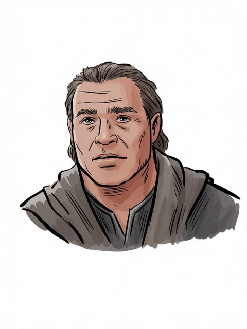

Of the house
Line of Elros of Númenor
The text
UT, The Line of Elros [C]

Line of Elros
GENERATED. Ideogram V3, driven by a prompt written in this archive; no illustrator drew it and it must never be presented as though one had. Ruling 3 asks for the hand and this IS the hand -- 'generated' is an answer, 'unknown' would not be. — the owner's ruling of 13 August [C]
Line of Elros
Line of Elros of Númenor
UT, The Line of Elros [C]
S.A.–S.A. 1873
[I-H]
Sent the fleet against Sauron, S.A. 1700
[I-H]
Line of Elros (S.A.–S.A. 1873)
Open the full record in the living archive →